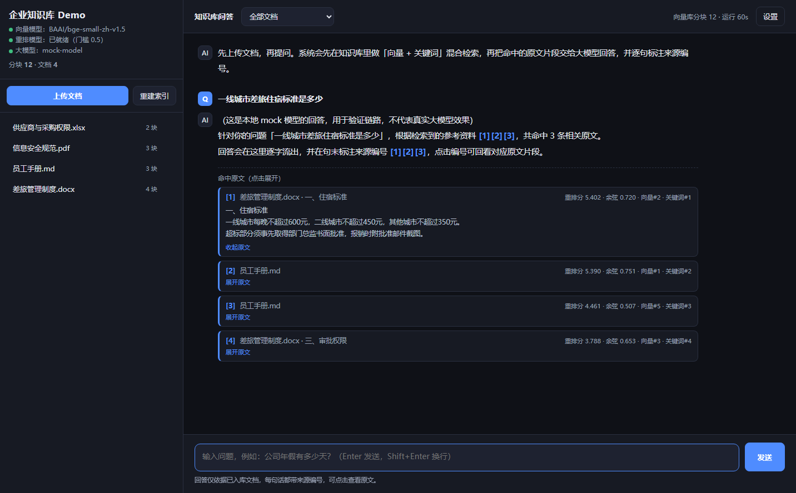
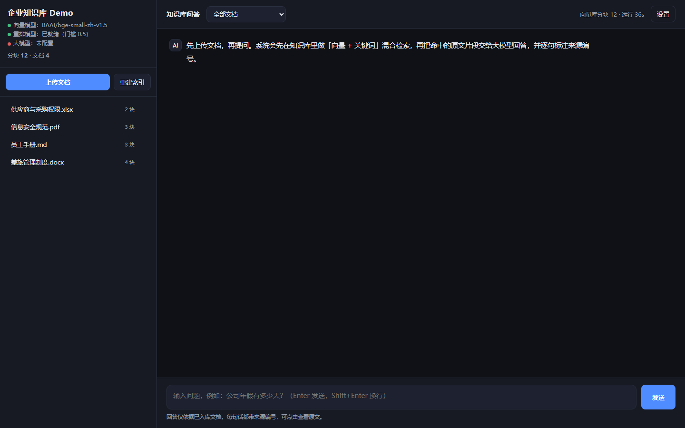

中
中文优化
BGE 中文向量模型 + BGE 中文重排模型，针对中文语义与专有名词调优，不是直接套英文模型。
完全自建、可解释、可迁移的 RAG 知识库。目标不是「装上就能用」，而是把企业知识库的每个环节都亲手跑一遍—— 从文档解析、中文切分、混合召回、交叉编码器精排，到答案里的每一句都能点回原文。
界面
每个结论后面都跟着 [编号]。点一下编号，直接展开那段原文——并且标出它为什么被选中：
重排分、余弦相似度、以及向量路与关键词路各自的排名。


架构
第一阶段广召回，第二阶段精排。这不是可选的优化项，而是精度能否达标的分水岭——下一节有实测数据。
实测数据
用 10 个真相关问题 + 8 个无关问题做过标定（4 份示例文档，中文 BGE 模型）。下面这四行是最关键的证据。
| 问题 | 类型 | 余弦相似度 | 重排分 |
|---|---|---|---|
| 出差住酒店能报多少钱 | 相关 | 0.7130 | 2.63 |
| ISO27001 是什么认证 | 相关 | 0.4537 | 1.85 |
| 北京到上海高铁多久 | 无关 | 0.6370 | -0.043 |
| Python 怎么读文件 | 无关 | 0.4154 | -7.27 |
于是纯阈值方案必然失败：余弦阈值扫描后，相关区间与无关区间是重叠的。
| 区间 | 相关问题的余弦 | 无关问题的余弦 |
|---|---|---|
| 扫描结果 | 0.45 ~ 0.78 | 0.30 ~ 0.64 |
| 结论 | 两段重叠 → 阈值取 0.45 还是 0.64，都必然在「漏拦假阳性」和「误杀真相关」之间二选一 | |
加上 Cross-Encoder 重排后，两段区间完全不重叠：
| 相关（10 个问题 × 全部候选） | 无关（4 个问题 × 全部候选） | |
|---|---|---|
| 重排分 | 0.43 ~ 4.91 | -10.19 ~ -0.043 |
能力
BGE 中文向量模型 + BGE 中文重排模型，针对中文语义与专有名词调优，不是直接套英文模型。
PDF（含页码溯源）、Word（含章节溯源）、Excel（含工作表溯源）、Markdown、TXT、CSV。
向量 + BM25 混合召回，Cross-Encoder 精排，融合用 RRF——只看排名不看分数，比加权求和稳。
每个结论强制标注来源编号，点击展开原文。企业知识库最大的风险不是答不出，而是答错了还看不出来。
存储就是「一个 FAISS 索引文件 + 一个 JSON」。删掉目录即彻底重置，没有藏在框架里的状态。
重排模型不可用时自动退回余弦门槛，服务不中断。也可用 KB_RERANK=0 主动关闭。
切分阈值只用于过滤页眉页脚碎片，每份文档保证至少保留一块——曾有一份 36 字符摘要被静默丢弃，已修。
内置 mock 大模型，可以先验证「检索 → 重排 → 组 prompt → 流式输出 → 引用渲染」整条链路。
选型
这三件事都实际装过、试过。结论记录在此——你在企业里选型时会遇到同样的坑。
它会拉入 PyTorch（约 2GB 磁盘、运行时数 GB 内存），本机 7.6G 内存 + C 盘只剩 14G，跑起来非常勉强。
改用 fastembed（ONNX Runtime）加载 BAAI/bge-small-zh-v1.5：磁盘约 90MB、内存约 200MB，中文效果不变。
unable to open database file（数据库文件已创建却打不开）chroma-hnswlib，本机没有 C++ 编译器all-MiniLM-L6-v2，下载路径写死、不读环境变量，中文检索效果差改用 FAISS：官方提供 Windows 预编译 wheel，IndexFlatIP + 向量归一化即余弦相似度，存储完全显式、便于审计。
解析 → 切分 → 检索 → 生成，每一步都在 app/ 里显式可见。企业知识库最终一定要按自己的文档特点调切分与检索，
被框架抽象掉反而更难改。
| # | 原本的假设 | 实测结果 | 最终决定 |
|---|---|---|---|
| 1 | 用 ChromaDB 做向量库 | Rust 内核在 Windows 建库即报错；降级需现场编译 C++ 扩展 | 换 FAISS |
| 2 | 用 ChromaDB 内置嵌入 | 默认函数硬编码英文模型，中文效果差 | 换 fastembed |
| 3 | 用 sentence-transformers | 拉入 PyTorch（约 2GB 磁盘、数 GB 内存） | 全程 ONNX |
| 4 | 只靠余弦阈值挡无关问题 | 无关问题得分（0.637）高于真相关问题（0.454），两段区间重叠 | 引入 Cross-Encoder 重排 |
| 5 | 切分阈值过滤碎片 | 一份 36 字符摘要在纯阈值逻辑下被静默丢弃 | 每份文档保证至少一块 |
| 6 | 引用里展示「相关度」 | 实际展示的是 RRF 融合分（量级 0.016，跨查询不可比），毫无解释力 | 区分余弦 / 重排分 / 融合分 |
细节
而不是固定字数切——固定字数会把一句话拦腰截断，检索时两头都匹配不上。
避免答案恰好落在切口上，导致两边的块都只拿到半句话。
Excel / Word 表格里的数字脱离表头就没有意义，所以整表保留，不切。
技术栈与运行
# 安装依赖（首次会下载约 90MB 向量模型到 models/） pip install -r requirements.txt # 启动服务 python -m uvicorn app.main:app --host 127.0.0.1 --port 8000 # 打开界面，左侧上传文档，右侧提问 start http://127.0.0.1:8000 # 端到端自检（在现有数据上巡检） python verify.py
可迁移性
代码层面的改动很少：kb.py 换存储实现（接口只有五个函数）、retrieval.py 换检索后端、main.py 加鉴权中间件。解析、切分、融合、提示词可直接复用。
| 项目 | 现在（单机 Demo） | 企业环境 |
|---|---|---|
| 向量检索 | FAISS 本地文件 | Milvus / Qdrant / Elasticsearch |
| 部署 | 单进程 uvicorn | Docker + 反向代理 + systemd / K8s |
| 模型 | 本地 ONNX 小模型 | 内网模型服务或 GPU 推理集群 |
| 鉴权 | 无 | SSO / LDAP，按部门做文档权限过滤 |
| 文档来源 | 手工上传 | 对接 Confluence / 共享盘 / OA，定时增量同步 |